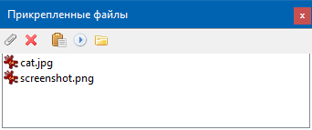

Работа с прикрепленными файлами - это одна из основных особенностей программы OutWiker. Все прикрепленные к заметке файлы хранятся в поддиректории __attach директории с заметкой. Чтобы прикрепить новые файлы, достаточно их скопировать в эту поддиректорию. Одной из целей, которая ставилась при разработке, это возможность вставки прикрепленных картинок в код страницы.
Например:
Для работы с прикрепленными файлами предусмотрена отдельная панель инструментов.

С ее помощью можно:
- Обновить список прикрепленных файлов (кнопка "Обновить"). Эта кнопка может понадобиться, если вы добавили или удалили файлы из папки __attach вручную без использования OutWiker.
- Добавить новые файлы (кнопка "Прикрепить файлы...").
- Удалить прикрепленные файлы (кнопка "Удалить файлы…").
- Вставить путь до прикрепленного файла в заметку, например, "__attach/cat.jpg" (кнопка "Вставить").
- Запустить прикрепленные файлы (кнопка "Запустить").
- Открыть папку с прикрепленными файлами в системном файловом менеджере (кнопка "Открыть папку с прикрепленными файлами").